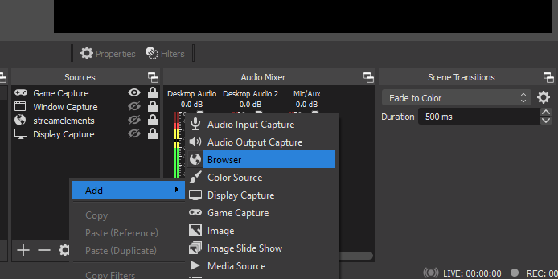
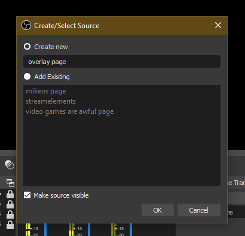
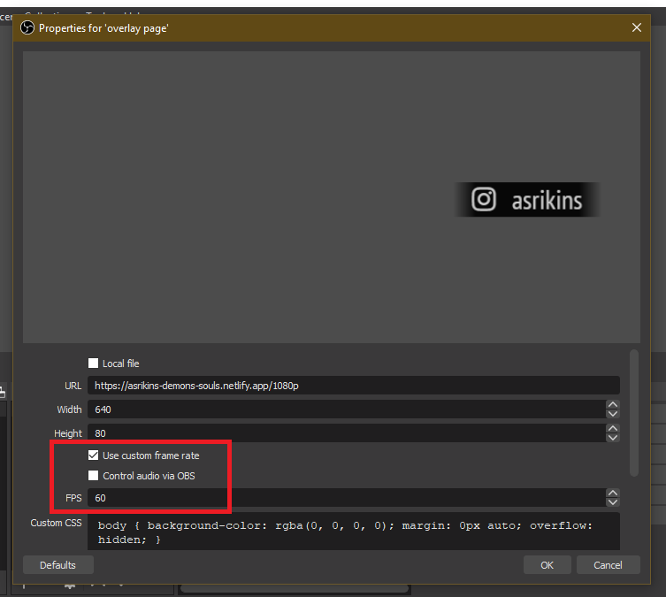
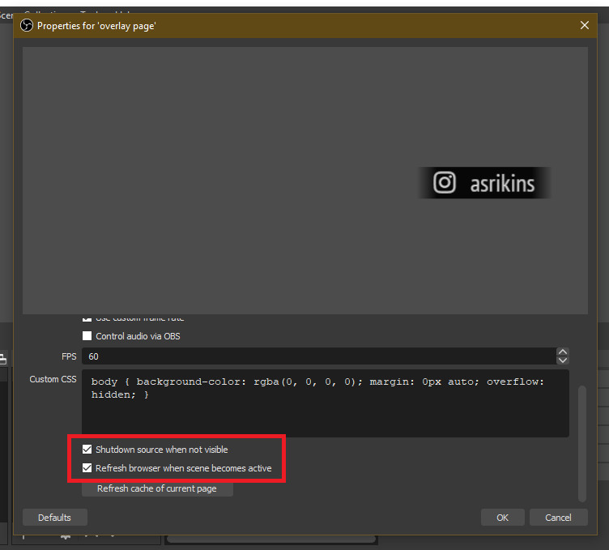
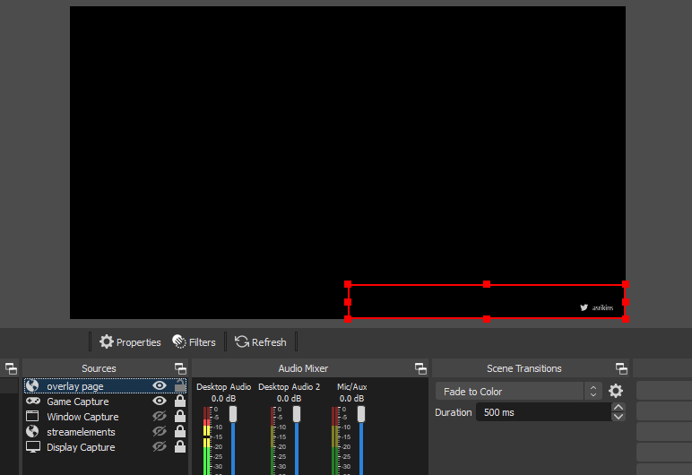

Hello!
So you've got this overlay thing. And you're kinda not sure what to do with it OR you do know what to do with it but just want
some settings. We'll walk through it all so you can use your fancy overlay thingy!
First, we'll make a Browser Source in OBS for your overlay. Find the scene you want the overlay to add the Browser Source and use the "+" button or right click inside the source menu then click "Browser".

A box should pop up letting you name the Browser Source. The name here is specifically for your organization so I would recommend using a name that makes sense for you. "Overlay page" or "Overlay source" are good options.

Now that we've added the source to OBS we can add in the actual overlay. For this particular overlay, I've included a
720p and
1080p option. You can navigate to either option in your web browser and paste the URL into OBS. The resolution for the overlay depends on the size you chose earlier. For the 720p page, I'd recommend 480 width and 50 height. For the 1080p page, I'd recommend 640 width and 80 height. If you find that text is cut off of your overlay, you can increase the width of the overlay until it fits.

For the extra settings, I would recommend checking the "Use custom frame rate option" then set the FPS to 60. That way, it'll be super good, smooth, :ok_hand: animations. Then further down, you can check both "Shutdown source when not visible" and "Refresh browser when scene becomes active" that way the source turns off when you're not in game. Sometimes this can cause issues but the page is light enough where you shouldn't notice either way.

Once you set all of those settings, you can hit "OK" and move the overlay. I would recommend you move the overlay to the bottom right of the scene. Afterwards, you can lock the source in OBS so you don't accidentally move it.

If you have any questions, feel free to let me know! Happy streaming! (What's a better sign off? Happy streaming is dorky :p)